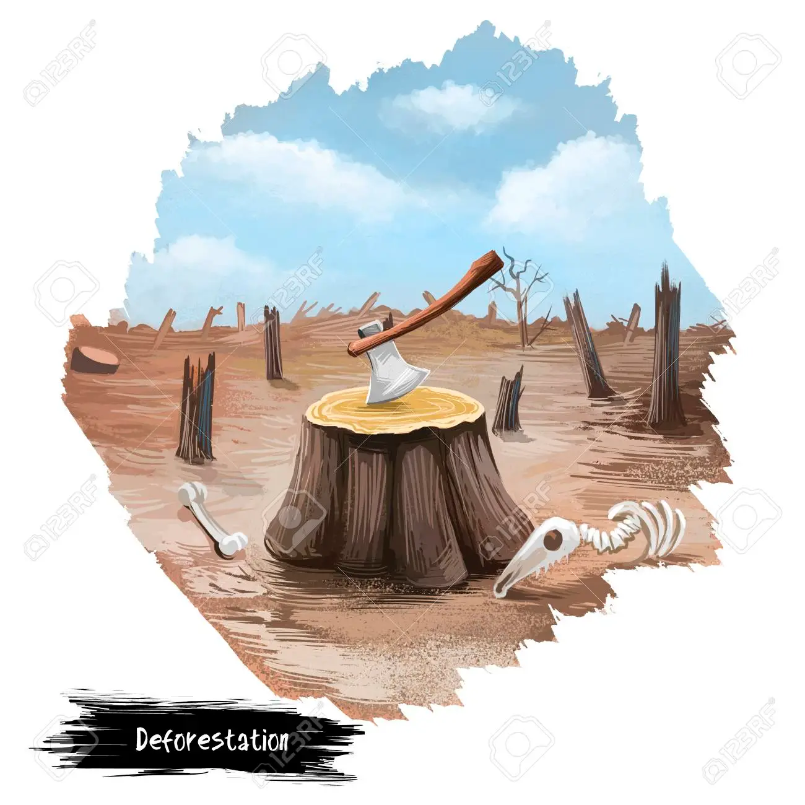
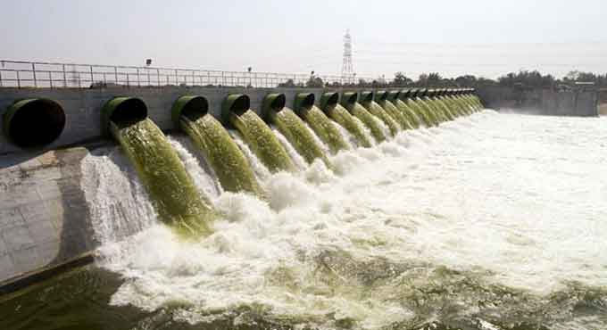

Floods can happen on flat or low-lying areas when water is supplied by rainfall or snowmelt more rapidly than it can either infiltrate or run off.
The excess accumulates in place, sometimes to hazardous depths. Surface soil can become saturated, which effectively stops infiltration,
where the water table is shallow, such as a floodplain, or from intense rain from one or a series of storms. Infiltration also is slow to negligible
through frozen ground, rock, concrete, paving, or roofs. Areal flooding begins in flat areas like floodplains and in local depressions
not connected to a stream channel, because the velocity of overland flow depends on the surface slope.
Endorheic basins may experience areal flooding during periods when precipitation exceeds evaporation.
A flood is an overflow of water that submerges land that is usually dry. Floods can be caused by natural phenomena such as heavy rainfall, snowmelt,
coastal storms, or human-made causes such as deforestation, urbanization, or climate change.
A flood is an overflow of water (or rarely other fluids) that submerges land that is usually dry. In the sense of "flowing water",
the word may also be applied to the inflow of the tide. Floods are an area of study of the discipline hydrology
and are of significant concern in agriculture, civil engineering and public health. Human changes to the environment often increase the intensity and frequency of flooding, for example land use changes such as deforestation and removal of wetlands,
changes in waterway course or flood controls such as with levees, and larger environmental issues such as climate change and sea level rise. In particular climate change's
increased rainfall and extreme weather events increases the severity of other causes for flooding, resulting in more intense floods and increased flood risk.
Precautions :
It's important to take necessary precautions to stay safe during floods. Some safety tips include:
- Stay informed about weather conditions and flood warnings.
- Prepare an emergency kit with necessary supplies.
- Make a plan for evacuation.
- Turn off electricity and gas if instructed to do so.
- Avoid driving or walking through floodwaters.
- Be aware of flash flood areas such as canals, streams, drainage channels.
- If you must leave your home, do not walk through moving water.
Causes
|  |  |  |
Floods can be caused by various natural and human-made factors. Some common causes of floods include:
- Heavy rainfall or snowmelt
- Coastal storms or hurricanes
- Human activities such as deforestation or urbanization
- Climate change and global warming
Prevention Measures
There are several measures that can be taken to prevent floods or reduce their impact. Some of these measures include:
|
|
Donation

You Can Help Flood Victims
- Donate and Fund to Help Flood Victims. You can give a donation on your own, things you can provide for flood victims, whether you have or buy something for them to help.
- Donate Goods to Help Flood Victims.
- Volunteer to Help Flood Victims.
- Donate Blood to Help Flood Victims.
- Donate in kind (medicines, blankets, food items, etc.)
- Mobilise other people through social media.